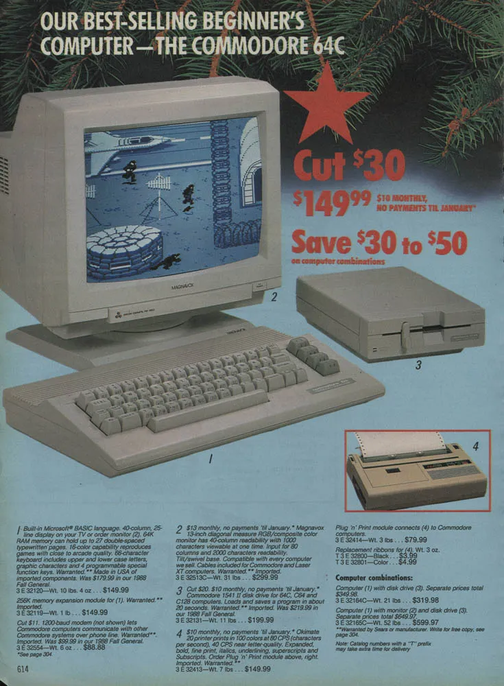
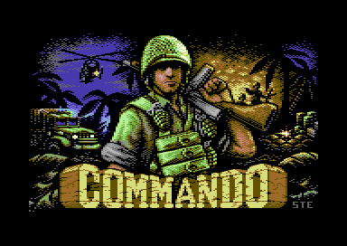
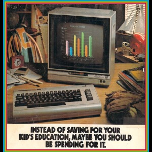
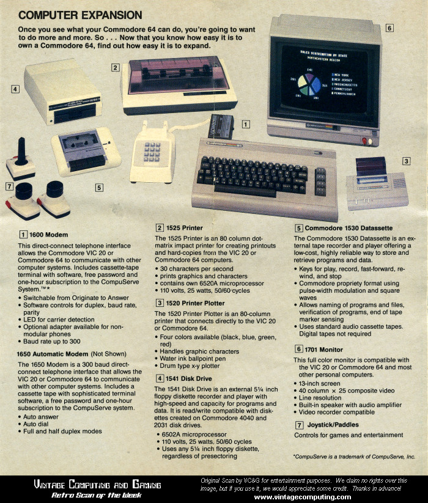
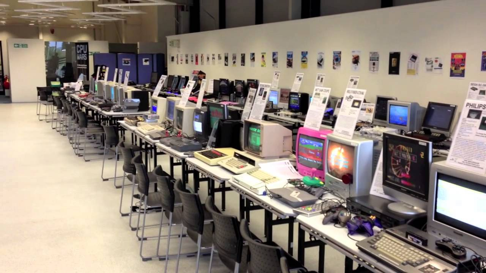

Commodore 64
The Commodore 64, often referred to simply as the C64, is a legendary computer that holds a special place in the hearts of many retro computing enthusiasts. Launched in 1982, it quickly became one of the best-selling home computers of its time, thanks to its affordability and impressive capabilities. Sporting a sleek design with its iconic beige keyboard and brown casing, the C64 was powered by the MOS Technology 6510 microprocessor and featured 64 KB of RAM, hence its name.
One of the Commodore 64's standout features was its extensive software library, offering a wide range of games, productivity software, and educational programs. It was a versatile machine, suitable for gaming sessions with classics like "The Bard's Tale" and "Maniac Mansion," as well as for programming enthusiasts who delved into BASIC or assembly language coding. Its audio and graphics capabilities were impressive for its era, allowing for immersive gaming experiences and creative projects.
Even today, the Commodore 64 maintains a strong following among retro computing enthusiasts and collectors. Its legacy as a groundbreaking home computer continues to be celebrated through emulation, community projects, and the preservation of its rich software heritage.

Features and Selling Points
Affordability
The Commodore 64 is renowned for several notable features that contributed to its popularity and success in the home computing market. Firstly, its affordability was a game-changer, offering powerful computing capabilities at a relatively low price compared to its competitors. This made it accessible to a wide audience and contributed significantly to its massive sales numbers.
Graphics
The Commodore 64's impressive graphics and sound capabilities were ahead of its time. With its VIC-II graphics chip and SID sound chip, it could deliver vibrant visuals and immersive audio experiences, making it a favorite among gamers and multimedia enthusiasts alike.
Software
Its extensive software library was a major draw. From productivity software like word processors and spreadsheets to a vast array of games spanning different genres, the C64 offered something for everyone, ensuring hours of entertainment and productivity.
Expansion
Commodore 64's expandability was another key feature. It had multiple ports for peripherals such as disk drives, printers, and joysticks, allowing users to enhance their computing experience and customize it to suit their needs.
Community
The community around the Commodore 64 was vibrant and passionate. Even decades after its release, dedicated enthusiasts continue to develop new software, create hardware expansions, and preserve the legacy of this iconic computer, keeping its spirit alive in the modern era of computing nostalgia.
